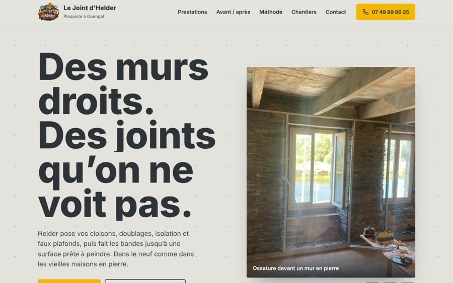
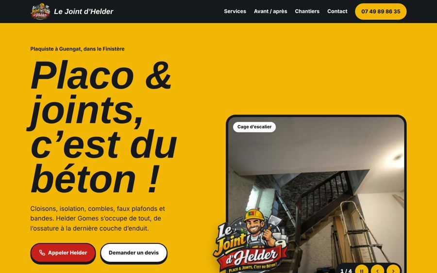
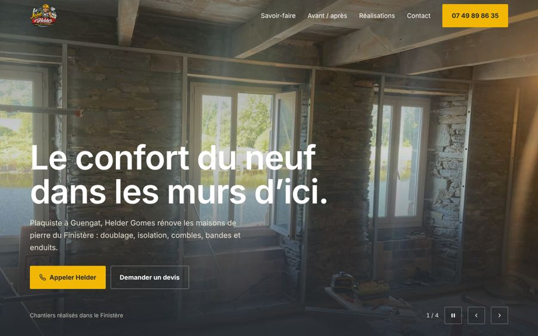
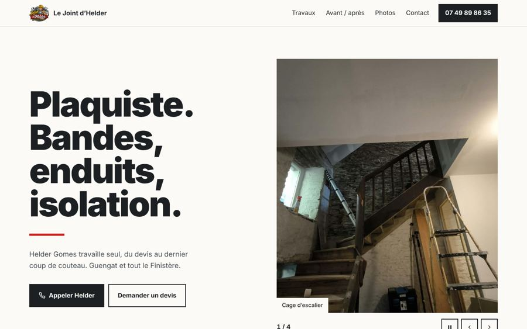

Quel site pour Le Joint d’Helder ?
Quatre versions du même site, avec les mêmes photos et les mêmes infos. Ouvrez-les sur téléphone et sur ordinateur, faites défiler, testez les photos et le curseur avant / après, puis choisissez.

Version actuelle · Plaque de plâtre
Fond gris plaque avec points de vis, transition au couteau à enduire.
Ouvrir le site
A · Chantier
Jaune casque et rouge, le logo en vedette, transition en coup de lame diagonal.
Ouvrir le site
B · Ardoise
Gris ardoise et photos plein écran, fondu lent avec zoom. Plus posé, plus haut de gamme.
Ouvrir le site
C · Atelier blanc
Blanc enduit et typographie noire, les photos se posent en bandes comme des plaques.
Ouvrir le site